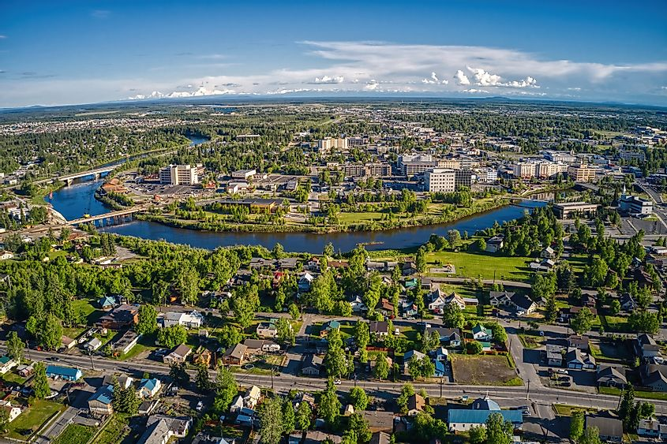

| Population |
Year of city incorporated |
location of City |
Classification of City |
Average income |
| 32,702 |
November 10, 1903 |
Alaska |
Urban |
$66,572 |
| Senator |
Homeownership |
Homeowners with Mortgage |
Insured |
uninsured |
| Scott Jiu Wo Kawasaki |
37.8% |
72.9% |
86.0% |
7.14% |
Fairbanks Facts
- By 1911, Fairbanks was Alaska territory’s largest city, with a population of 3,500.
- Gold is still commercially mined in two locations near Fairbanks.
- Fairbanks is located under the Auroral Oval.
- Nearly half of Fairbank’s population is made up of military personnel.
- Aviation and the military are two major industries in Fairbanks.
